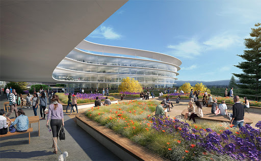
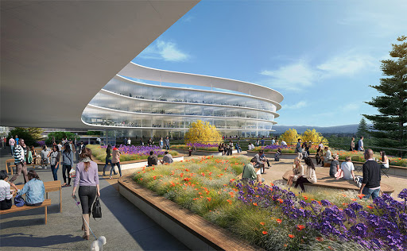

Information About My Exprience
I have 1 year of experience in web development from 2018 to 2019. when I was in India I did this job in oops info solution company in Chandigarh.
Duties
- Designing the architecture of the component of an application.
- Planning and prototyping new application.
- Testing sites and application in different browser and environment.
To know more about my job duties click here.
Current Job
Right now I am working as a grocery clerk in Freshco in Brampton, Ontario. I got this job in mid of march 2020 and I am working there as a part-time worker.
Information About My Exprience


I have 1 year of experience in web development from 2018 to 2019. when I was in India I did this job in oops info solution company in Chandigarh.
Duties
- Designing the architecture of the component of an application.
- Planning and prototyping new application.
- Testing sites and application in different browser and environment.
- Meeting clients or account managers to discuss the business objectives and requirements of the job.
- Designing responsive web templates for websites and mobile
- Interpreting the client’s business needs and developing a concept to suit their purpose.
Current Job
Right now I am working as a grocery clerk in Freshco in Brampton, Ontario. I got this job in mid of march 2020 and I am working there as a part-time worker.